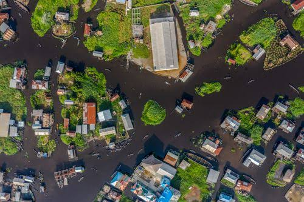
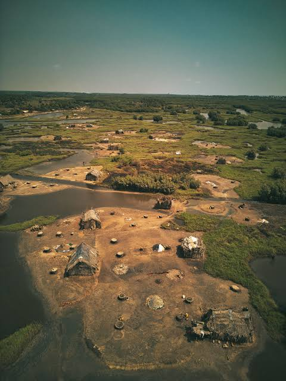
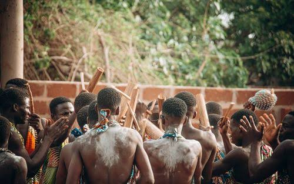

Cotonou

Cotonou est la plus grande ville du pays et son centre économique. On y trouve le grand marché Dantokpa.
Un petit guide sur mon pays, par Emmanuel KAKPO.

Cotonou est la plus grande ville du pays et son centre économique. On y trouve le grand marché Dantokpa.

Ouidah est une ville historique. La Porte du Non-Retour rappelle la mémoire de la traite des esclaves.

Abomey était la capitale du royaume du Danhomè. Ses palais royaux sont inscrits au patrimoine mondial de l'UNESCO.
Pour découvrir les palais royaux d'Abomey, consultez la page de l'UNESCO sur les palais royaux d'Abomey.